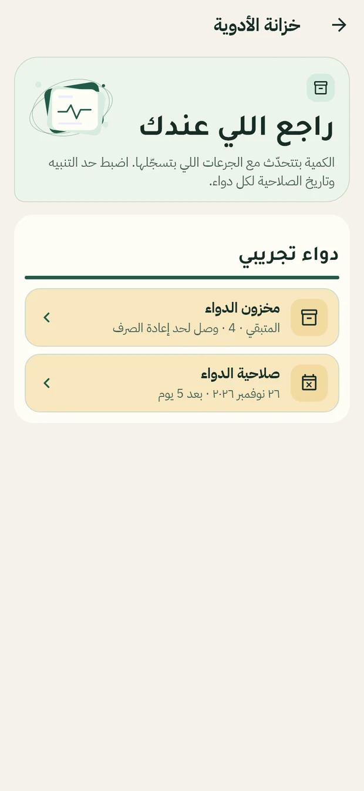
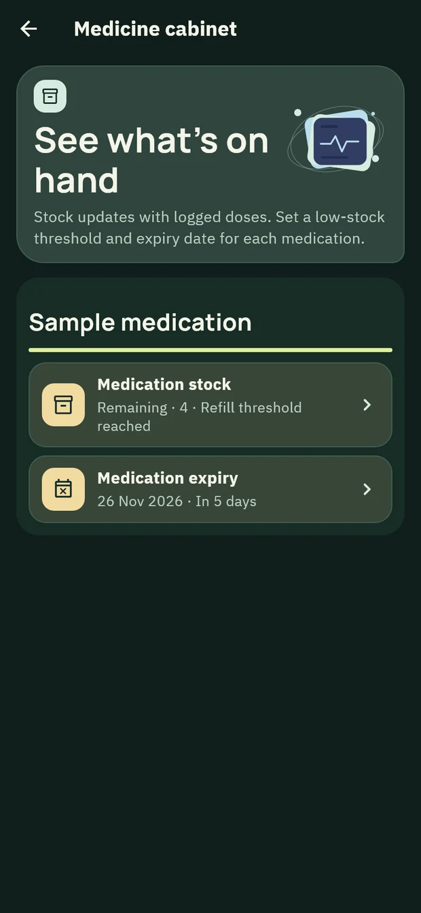
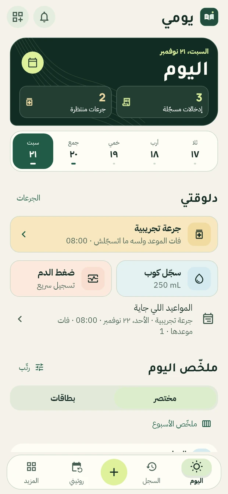
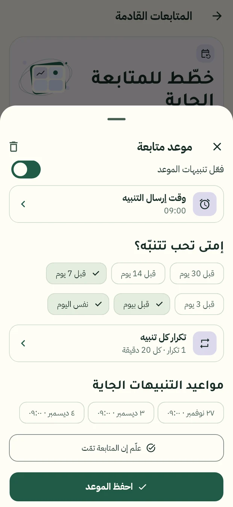
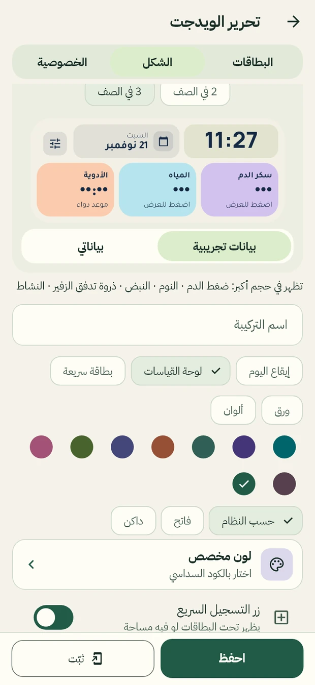

خزانة الأدويةMedicine cabinet
الجرعات المسجّلة بتحدّث الكمية. حدّد إمتى يومي ينبهك إن الدوا قرب يخلص أو تاريخ الصلاحية قرب.Logged doses update your stock. Set a low-stock threshold and choose when to get expiry reminders.

من أول قياس لحد ميعاد إعادة التحليل. اجمع أدويتك وقياساتك ومتابعاتك في دفتر بيرتّب نفسه حسب اللي يهمّك.From your first reading to your next lab visit. Keep medication, measurements, and follow-ups together in a journal shaped around what you track.
مجاني · أندرويد 8 أو أحدث · عربي وإنجليزيFree · Android 8+ · Arabic and English


ظبّط اللي يظهر في يومك، واختار إمتى التنبيهات توصلك.Choose what shows up in your day and when reminders should reach you.
الجرعات المسجّلة بتحدّث الكمية. حدّد إمتى يومي ينبهك إن الدوا قرب يخلص أو تاريخ الصلاحية قرب.Logged doses update your stock. Set a low-stock threshold and choose when to get expiry reminders.

خطّط لإعادة تحليل أو زيارة. اختار يوم أو أكتر للتنبيه، واقفل التنبيهات لما تعلّم إن المتابعة تمّت.Plan a repeat test or appointment. Choose alert days and clear the reminders when the follow-up is complete.

اختار البطاقات اللي محتاجها على الشاشة الرئيسية، ورتّبها مع الساعة والتاريخ واختصارات التسجيل.Pick the cards you want on your home screen and arrange them with the clock, date, and logging shortcuts.

يومي بدأ بدفتر صغير لمتابعة السكر. وباقتراح من صاحب، الفكرة اتوسّعت عشان أي حد يقدر يرتّب متابعته الصحية بالطريقة اللي تناسبه.Yawmi began as a small diabetes journal. A friend suggested opening it up so anyone could build a health routine around what they need to track.
تصميم وبرمجة محمد عبدالنبي. صدقة جارية على روح والديه، عبدالنبي عبدالفتاح وفاطمة بدير عسل. ربنا يرحمهما.Designed and built by Mohamed Abdelnaby, in memory of his parents, Abdelnaby Abdelfattah and Fatma Bedeir Assal.